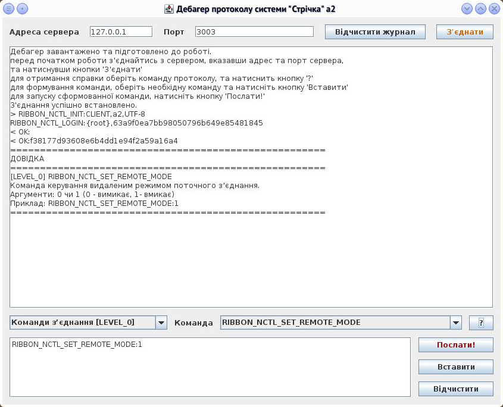

Інтерфейс програми
Інтерфейс програми
Загальний опис:
Спеціалізована утиліта для перевірки роботи протоколу сервера системи. Дозволяє надсилати команди, отримувати допомогу у форматуванні команди і отримувати відповіді сервера. Застосовується для розробки серверної частини і її налагодження.
Список залежностей:
Немає.
Налаштування
Ця програма не зберігає налаштувань.